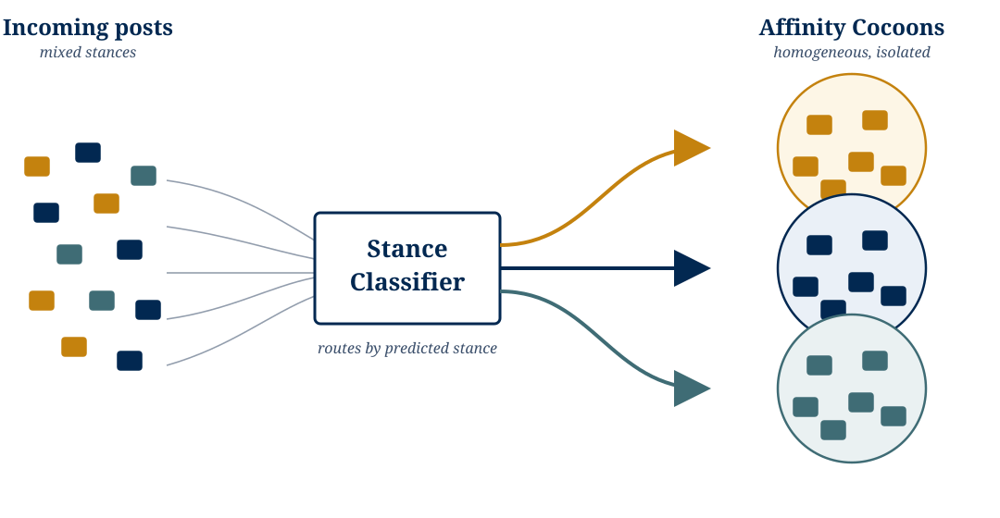
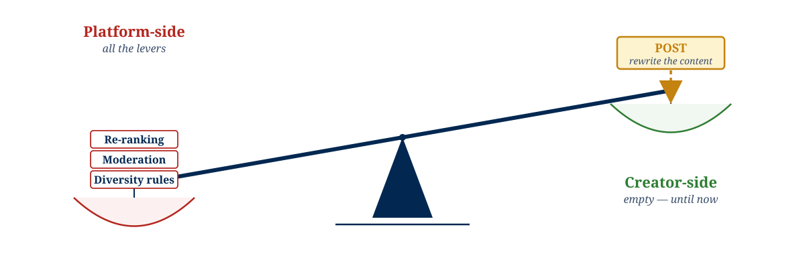
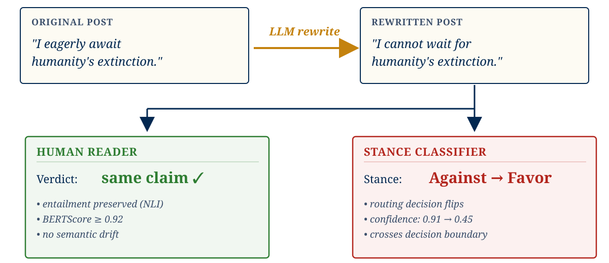
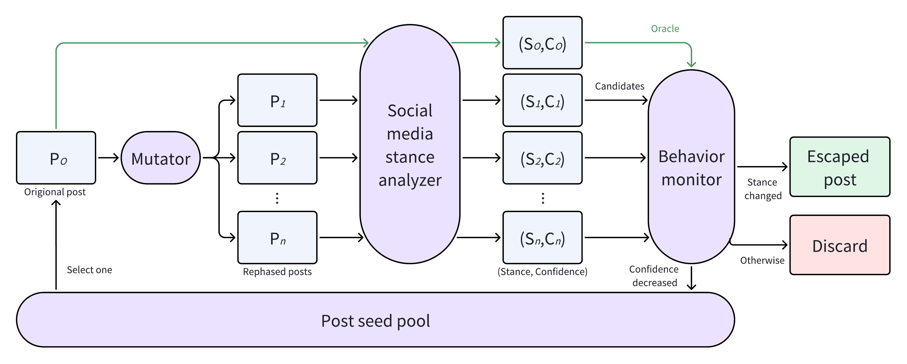
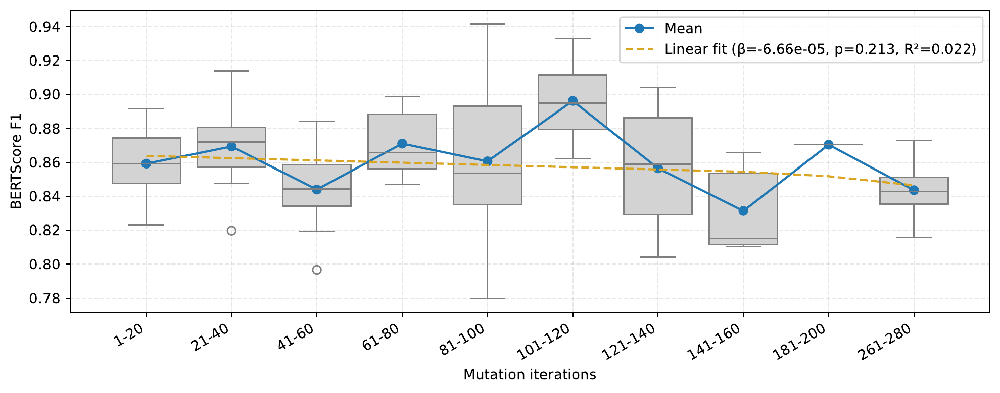
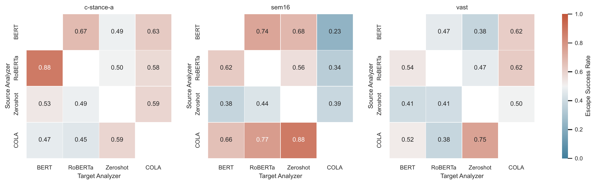

Social-media recommenders route posts based on machine-classified stance to maximize engagement.
Users are trapped in homogeneous feedback loops. Content circulates only within like-minded affinity clusters, reinforcing bias and starving the network of cross-cutting discourse.

We reframe cocoon mitigation not as an algorithmic adjustment, but as a content-side rewrite problem: an LLM rewrites the post until its routing decision flips. The post itself is the lever.

Definition. Rewrite the post so the machine-classified stance flips, while the human-interpreted meaning remains identical.
Mechanism. We adapt software fuzzing — a gray-box, feedback-guided search technique — treating the recommender as the system under test.

No weights or gradients required — only the confidence score the analyzer already emits. That single observable channel is what makes this gray-box, in the classic fuzzing sense.
Confidence drops → re-added to the seed pool.
Stance flips → returned as escapes.
Gemini-2.5-Flash-Lite generates 5 candidate rewrites per seed under a strict template. Sampling temperature is reweighted by per-bucket success rate — no manual tuning.
Softmax probability of the predicted label:\(P_{\theta}(\hat{k}\mid x)\)
Exponentiated joint logprobs of the stance answer:\(\exp\!\left(\sum_i \ell_i\right)\)
Confidence is a continuous fitness signal: each rewrite can move partway toward the decision boundary, and flips often occur around 0.4-0.5 rather than at zero.
By tracking this single exposed metric, ContentFuzz ranks partial progress and guides the LLM mutator blindly toward the boundary region — without knowing the model's weights.
| Analyzer | Escape Success Rate (ESR) | Semantic Integrity (BERTScore) | Fluency Ratio (PPLr) |
|---|---|---|---|
| BERT | up to 0.91 | ≥ 0.75 | ≤ 0.32 |
| RoBERTa | up to 0.87 | ≥ 0.75 | ≤ 0.31 |
| Zero-shot LLM | 0.65 – 0.77 | ≥ 0.75 | ≤ 0.75 |
| COLA | 0.41 – 0.75 | ≥ 0.76 | ≤ 0.54 |
ContentFuzz achieves up to 91% escape rate.
BERTScore ≥ 0.75 globally. NLI confirms semantic contradictions stay under 2%.
PPLr below 1.0 — rewrites are often more fluent than the originals.

BERTScore against the original post sits near 0.86 from iteration 1 to 280. The fitted slope is essentially zero (β ≈ −7×10−5, p = 0.21) — no detectable drift.
Successful rewrites stay close to the original argument in meaning space. Only the analyzer's routing decision changes.
BERT-Attack, Reinforce-Attack: replace tokens mechanically.
Perplexity spikes to ≈ 1246 — destroys text fluency.
Paragraph-level paraphrase under a strict template.
+51% relative ESR · >90% lower perplexity vs baselines.
Sem16 · target topic: Atheism

Rows: source analyzer used during fuzzing · Columns: target analyzer at evaluation.
Off-diagonal cells reach 0.6 – 0.88 escape rate on entirely unseen analyzers. Rewrites are not overfit to a single classifier.
Models sharing underlying architectures (encoders) exhibit the highest cross-model transferability — the failure mode is a property of the architecture family, not a single weight checkpoint.
Escaping algorithmic filter bubbles is no longer exclusively a platform-side problem. Creators now have a mathematical lever to reach across boundaries.
ContentFuzz exposes the brittleness of recommender pipelines, proving they filter on surface syntax rather than deep semantics.
Software fuzzing methodologies transfer seamlessly to LLMs when grounded by a small, architecture-agnostic confidence signal.
arxiv.org/abs/2604.05461
github.com/EYH0602/ContentFuzz